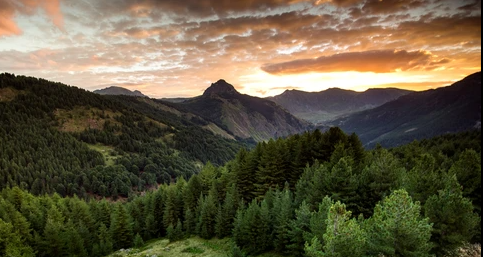

Experiment 2 - p5.Js
Reference Image
Description
I am trying to replicate the landscape of the reference-image. I used p5.js the javascript library to tweak and create certain images. I also used noise and random to generate most of the pieces of the generation. I also used Perlin to create most of the landscape that was the foundation for everything else.
Technical
The project utilizes Procdural generation to create a layered and natural landscape of a mountain with a forest. It uses p5.js to create rugged mountains, grass hills, moving clouds, scattered rocks and trees. The mountains and grass hills use Perlin noise to control the elevation of their peaks. Rocks and trees are both scattered around randomly in the lower half of the page with them being larger the lower they were and vice versa. This created depth. Clouds would slowly drift to the right of the screen similar to the drifting of trees and rocksm but had also random y change similar to how clouds would move. The sun was simple as it was randomly generated above a certain y axis and had a ring around it.
Reflection
I worked on this by myself but took inspiration from the examples shown. I decided to use the example as a rough draft but change it up while adding many new features.